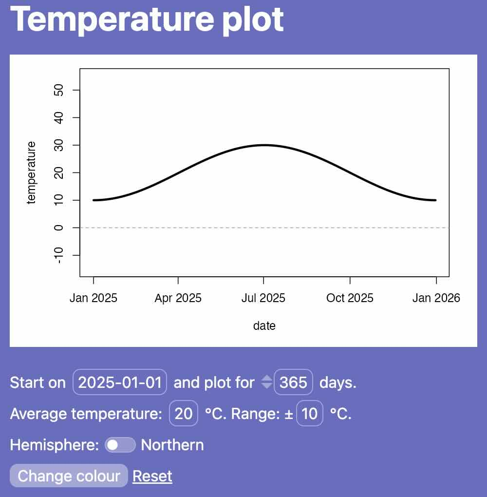

inshiny provides a basic set of compact Shiny input
widgets that are designed to be displayed within surrounding text
without breaking the spacing between lines. You can use
inshiny to integrate Shiny input within text paragraphs, or
just to get user input for your Shiny app without taking up as much
space on the page compared to standard Shiny inputs.
By default, Shiny uses Bootstrap 3 for layouts
and styling. inshiny requires Bootstrap
5, which just means that you will need to use the bslib
package (which enables updating to Bootstrap 5) in addition to
shiny for inshiny to work.
To use Bootstrap 5, when building your UI, you should use one of
bslib’s page layout functions instead of Shiny’s built-in
page layouts. In other words, use
-
bslib::page()instead ofshiny::basicPage()orbootstrapPage() -
page_fluid()instead offluidPage() -
page_fixed()instead offixedPage() -
page_fillable()instead offillPage() -
page_sidebar()instead ofsidebarLayout()withinfluidPage() -
page_navbar()instead ofnavbarPage().
You should also set a theme using bslib::bs_theme();
this allows you to specify version = 5 so that your app
will continue to use Bootstrap 5 even after Bootstrap 6 is released and
bslib starts to support it. (We may add support for
Bootstrap 6 to inshiny in the future, but better to make
sure your app stays future-proof either way!)
All inshiny widgets should be wrapped in a call to
inline(), which creates a “paragraph” or “line” of text in
which you can mix in widgets and arbitrary HTML elements. You can then
use widgets such as inline_text() or
inline_slider() within this element. Here is a simple demo
of a Shiny UI that uses most of the widgets provided by
inshiny:
ui <- page_fixed(
theme = bs_theme(version = 5, preset = "quartz"),
h1("Temperature plot"),
plotOutput("plot", width = 480, height = 320),
br(),
inline("Start on ", inline_date("start_date", "2025-01-01"),
" and plot for ", inline_number("num_days", 365), " days."),
inline("Average temperature: ", inline_slider("avg_temp", 20, 0, 40),
" °C. Range: ±", inline_select("temp_range", c(5, 10, 15), 10), " °C."),
inline("Hemisphere: ", inline_switch("southern", FALSE,
on = "Southern", off = "Northern")),
inline(inline_button("colour", "Change colour"), " ",
inline_link("reset", "Reset"))
)The page starts with a title (h1) and a
shiny::plotOutput() that we’ll use to plot average
temperatures according to the settings below. There’s a line break
(br) to space things out, then four inline
lines containing the inline_* widgets provided by
inshiny. It looks something like this:

Compare this to a similar layout with basic Shiny inputs:
ui <- page_fixed(
theme = bs_theme(version = 5, preset = "quartz"),
h1("Temperature plot"),
plotOutput("plot", width = 480, height = 320),
br(),
dateInput("start_date", "Start date", "2025-01-01"),
numericInput("num_days", "Number of days", 365),
sliderInput("avg_temp", "Average temperature (°C)", 0, 40, 20),
selectInput("temp_range", "Temperature range (± °C)", c(5, 10, 15), 10),
checkboxInput("southern", "Southern hemisphere", FALSE),
actionButton("colour", "Change colour"),
actionLink("reset", "Reset"),
)The controls for this version take up far more space:

Of course, you could save some vertical space by laying out the
elements in a grid, but they are still rather large compared to the
inshiny widgets.
We complete the app using server code to handle the inputs:
server <- function(input, output, session)
{
output$plot <- renderPlot({
date <- input$start_date + seq_len(input$num_days) - 1;
xpts <- as.POSIXlt(date)$yday; # day number, 0-365
temperature <- cos(2 * pi * xpts / 364) *
ifelse(input$southern, 1, -1) * as.numeric(input$temp_range) +
input$avg_temp;
oldpar <- par(mar = c(5, 5, 1, 2))
plot(date, temperature, type = "l", ylim = c(-15, 55),
col = input$colour %% 16 + 1, lwd = 3)
abline(h = 0, col = 8, lty = 2)
par(oldpar)
})
observeEvent(input$reset, {
update_inline("start_date", value = "2025-01-01")
update_inline("num_days", value = 365)
update_inline("avg_temp", value = 20)
update_inline("temp_range", value = "10")
update_inline("southern", value = FALSE)
})
}This illustrates the use of update_inline() to reset the
widgets to their original values. You would then launch the app with
shinyApp(ui, server).